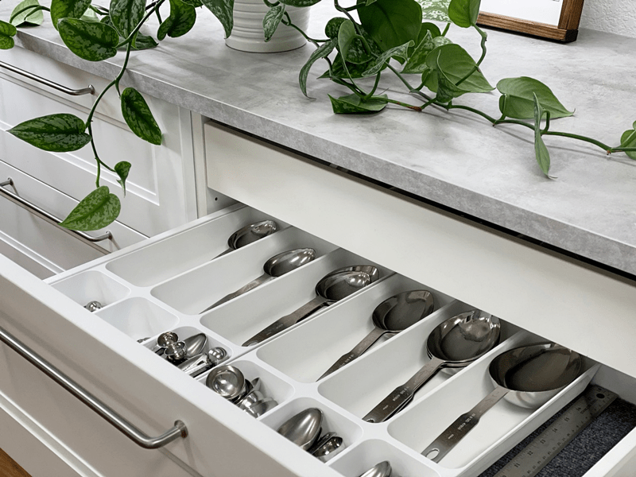
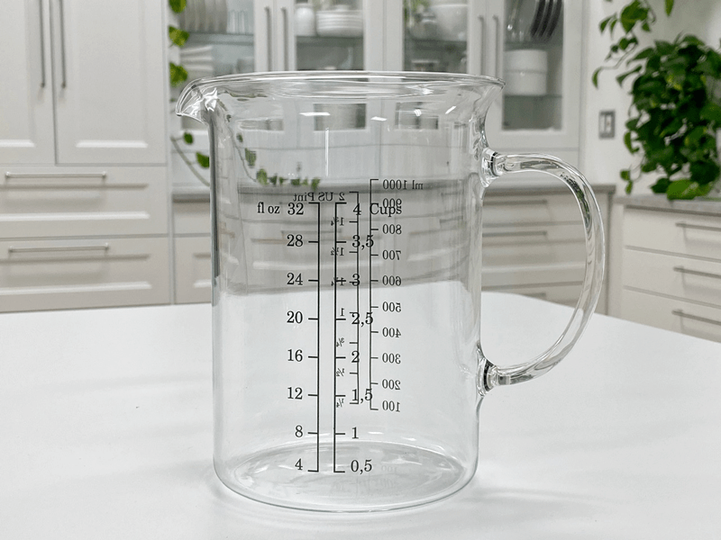
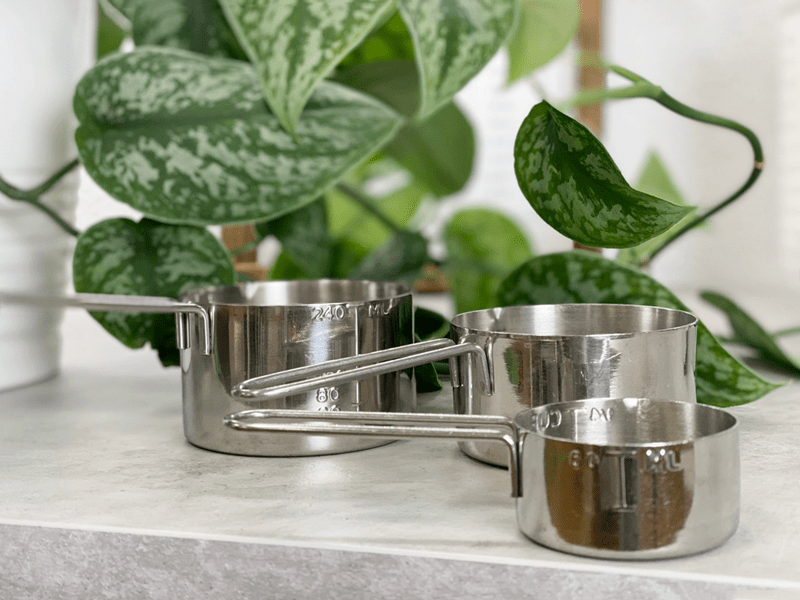
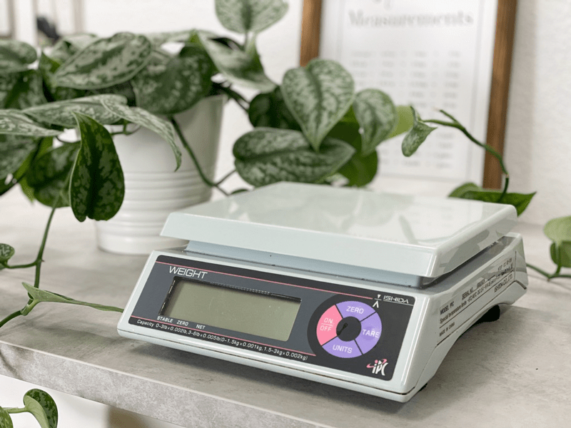

Measuring Utensils and Scales
I like to think of raw food cuisine as a form of art, whereas baking is a combination of science and precision. Unlike baking, raw food recipes are forgiving. A decade ago, I thought that I wanted to be a baker because I couldn’t cook anything without a recipe. I loved the idea of being told how much to use, no give or take.

Luckily, I stumbled upon the raw whole food lifestyle. It opened my palate, my mind, and in some magical way, it pulled a passion and creativity out of me that I never knew existed. A real miracle took place that changed my life in so many beautiful ways. If you are new to making foods from scratch, it is important that you follow recipes precisely by using the proper measurements and the proper measuring utensils (at first anyway). Meaning, use liquid measuring cups for liquid ingredients, measuring cups for solid/dry ingredients, and measuring spoons when necessary.
I talk more about how to tackle a recipe (here). I highly recommend that you read it whether you are new to preparing whole foods or you are a veteran. Knowledge is power and power is learned every day. After some time, with a few recipes under your belt, you will be able to move more freely around ingredients. A huge culinary world will open to you as you learn to add a splash of this, a dash of that, or a blop of this. But until then, follow recipes and learn how to use the correct measuring devices.

Measuring Spoons
I believe that one can never have too many measuring spoons. One set is all that you need, but having multiple speeds up the time in the kitchen when prepping food. I often find nice ones at second-hand stores and garage sales, so I pick them up.
Measuring spoons come in all shapes and sizes. Some are simple, and others are decorative. As long as they give the proper measurement, use whatever brings a smile to your face. It’s always good to have a set of long, narrow measuring spoons because they fit into small spice jars or other containers. You never want to shake spices out onto the spoon while holding it above the mixing bowl. You can quickly ruin a recipe. Also, select stainless steel spoons over aluminum or plastic. They are much sturdier, and a good set will last you a lifetime.
- Most common measurement sizes: 1/4 teaspoon – 1/2 teaspoon – 1 teaspoon – 1 Tablespoon (3 teaspoons)
- Abbreviations
- Teaspoon – tsp / t
- Tablespoon – T, TB, Tbl, Tbsp

Liquid Measuring Cups
So, here’s the scoopy-doop. Liquid measuring cups are made of glass or clear plastic to accurately measure since they can and should be viewed from the side at eye level.
- Made of clear plastic or glass.
- Look for a spout for the ease of pouring.
- Measurements are generally going up in increments along the side of the measuring cup.
- Measurement is made by pouring liquid to the desired level.
- Most common sizes are: 1/4 cup – 1/3 cup – 1/2 cup – 2/3 cup – 3/4 cup – 1 cup – 4 cup.
- Abbreviations for cup are usually C or c.
- Many show ounces/ml as well as cup measurements.
- Look for measuring cups that have a smooth inside, some have ridges, and it makes it more difficult to scrape ingredients out.

Dry Measuring Cups
- Measuring cups for dry ingredients are generally made of metal or plastic.
- Measurement is made by leveling off dry ingredients.
- Most common dry measurement sizes are: 1/4 cup – 1/3 cup – 1/2 cup – 2/3 cup – 3/4 cup – 1 cup.

Kitchen Weigh Scales
A lot of people like to measure ingredients out by weight. There are three types of kitchen scales: mechanical, balance, and digital. The digital scale has the advantage of being more precise than the mechanical model, but both types are useful in the kitchen.
Aside from providing more accurate measures (and as a result, more consistent results), they also come with the perk of less mess and cleanup. And what does this mean to you? It saves time in the kitchen! With a scale, you can get away with using nothing more than a bowl and one spoon.
As I share recipes on my site, you may have noticed a small change in my recipe style. I am trying to indicate both measurements of cups and grams. Not all of my recipes have grams listed because, for years, I only used measuring cups and spoons. But I am trying to get into the habit of providing both these days.
If you come across a recipe that only has volumetric measurements, first measure the ingredients out with measuring cups and spoons, then weigh each one and make a note of what the weight is. That way next time you will be able to use just the scale.
In my kitchen, I only use a digital scale. Let me share why…
- They’re more accurate than a traditional scale.
- They’re easy to use since they have large digital displays that show you the exact weight of your item within seconds.
- They have a tare button that lets you put a bowl on the scale and zero out the scale. If a recipe calls for 250 grams of almond flour, 10 grams of nutritional yeast, and 5 grams of salt, you can stick the bowl on the scale, tare it, pouring each ingredient directly into the bowl all without dirtying a single measuring cup or spoon.
- They do conversions. Most digital scales can be easily switched from grams to ounces.
- They’re inexpensive.
- They’re small, so they don’t take up much space.
- Abbreviations
- Gram – g
- Ounce – oz
- Kilogram – kg
- Pound – lb
- Milliliter – ml, mL
What to Look for When Purchasing a Scale
- Digital for easy reading.
- A Tare Button is a must. It calculates the net weight of your ingredients by automatically subtracting the weight of any bowl or container.
- If possible, a removable platform for the ease of cleaning. If not, that’s ok, but look for ones with the least amount of cracks and crevasses, so food doesn’t get lodged in there.
- One with the adequate weight capacity. Some can only handle 1, 3, or 5 lbs of weight. If you use a glass bowl, the scale may not be able to handle much more weight.
- Be cautious if purchasing a cheap scale. You will be disappointed with its function.
How to use:
Important tip based on my experience. When adding multiple ingredients to the bowl, don’t pour them from the original container, use a scoop to transfer it from the container to the bowl. If you already have almond flour, oats, and cinnamon in the bowl, and go to pour the salt from the container into the mix, you could dump too much, and you won’t be able to remove it out of the other powders. I hope that makes sense.
- Place the scale in front of you and turn on. Make sure it is on a level surface.
- Select the measure you are using; grams, ounces, kilograms, etc.
- Set a mixing bowl on the scale and hit the tare button to zero out the weight of the bowl.
- Add the first ingredient until you reach the desired weight indicated on the recipe.
- Before adding the next ingredient, hit the tare button to zero out the scale again. You will do this with each new item added.
- Add the next ingredient – and so on.
****It’s important to note that soaked and dehydrated nuts and seeds weigh less than those that aren’t…. so you follow my recipes and use a scale, keep that in mind. If you choose NOT to go through the soaking and dehydrating process then I would follow the cup measurements. ****
Let’s Go Shopping
Measuring Utensils
Measuring Spoons
Dry Measuring Cups
Wet Measuring Cups
Digital Weigh Scales
Both scales are good. I provided two different units based on price points.
Nouveauraw.com is a participant in the Amazon Services LLC Associates Program, an affiliate advertising program designed to provide a means for us to earn fees by linking to Amazon.com and affiliated sites – at no extra cost to you.
Thank you for your support! amie sue
© AmieSue.com